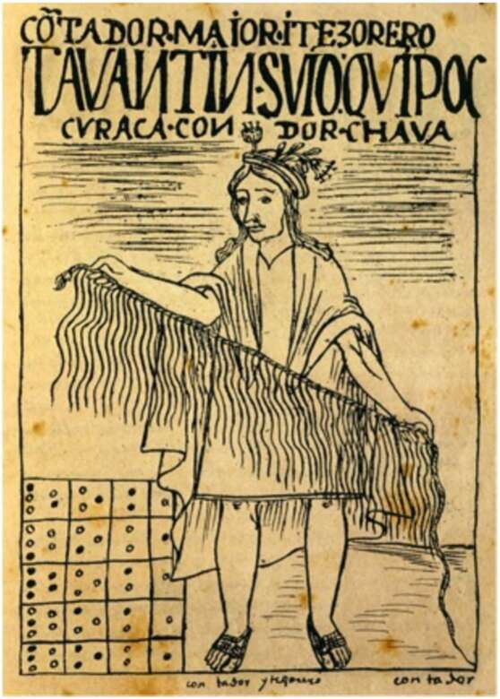

use it to write love poems. 20. A man holding a quipu, as depicted in a Spanish manuscript following the fall of the Inca Empire. It didn’t disturb the Sumerians that their script was ill-suited for writing poetry. They didn’t invent it in order to copy spoken language, but rather to do things that spoken language failed at. There were some cultures, such as those of the pre-Columbian Andes, which used only partial scripts throughout their entire histories, unfazed by their scripts’ limitations and feeling no need for a full version. Andean script was very different from its Sumerian counterpart. In fact, it was so different that many people would argue it wasn’t a script at all. It was not written on clay tablets or pieces of paper. Rather, it was written by tying knots on colourful cords called quipus. Each quipu consisted of many cords of different colours, made of wool or cotton. On each cord, several knots were tied in different places. A single quipu could contain hundreds of cords and thousands of knots. By combining different knots on different
